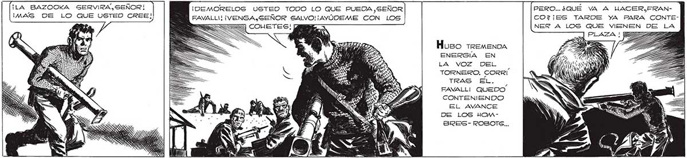
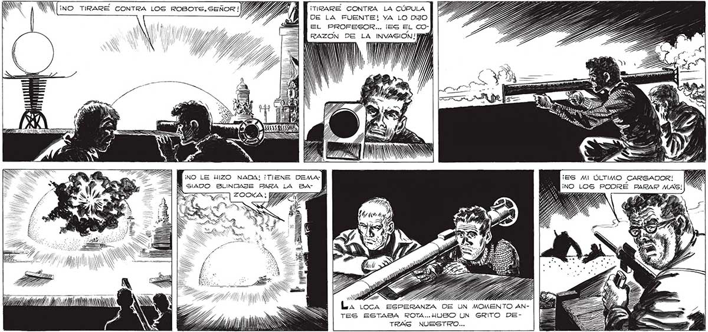

284 ¡LA BAZOOKA SERVIRA, SEÑOR! ¡MAG DE LO QUE USTED CREE! ¡DEMORELOG USTED TODO LO QUE PUEDA ,SEÑOR PERO..¿QUÉ VA A UACER,FRANCO7¡ES TARDE YA PARA CONTEFAVALLI! ¡VENGA GEÑOR SALVO! ¡ AYÚDEME CON LOS NER A LOGS QUE rita DE e Huso tremenDA ENERGÍA EN E, RON LA VOZ DEL ($ es SA TORNERO. CORRI A ¿ TRAS EL. FAVALLI QUEDO CONTENIENDO EL AVANCE DE LOS HOMBSRES- ROBOTS... ¡TIRARÉ CONTRA LA CÚPULA | l dee DE LA FUENTE! YA LO DIJO EL PROFESOR... ¡ES EL CO"UN Y AN Ye : RAZÓN DE LA pa a) MW Y Y NA ' ¡NO LE HIZO NADA! ¡TIENE DEMAW SIADO BLINDAJE PARA LA BA ZOOKA; 3 TI ¡ES MI ÚLTIMO CARGADOR! ¡NO LOS PODRE PARAR MAS! << ANNA P SA EAU IS 1) EA INN Ñ N NN X a $ ú JN AN La loca ESPERANZA DE UN MOMENTO ANTES ESTABA ROTA..HUSO UN GRITO DEINN S Ñ E JA AOS , TRAS NUESTRO...

